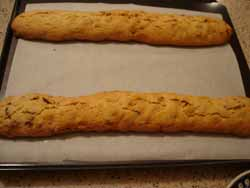
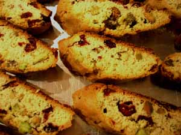

Mom makes biscotti
It’s Christmas cookie time, and my signature cookie seems to have become biscotti. I like giving home made baked goods for Christmas, and just wish I had more time for baking. Some years I make stollen, from a wonderful recipe in the New York Times magazine about ten years ago, with dried cranberries and toasted almonds. Other years I make both chocolate and vanilla caramels from my old Better Homes and Gardens Cookbook. Their recipe is slightly easier than the classic caramel recipe, as it calls for a can of sweetened condensed milk instead of a large quantity of heavy cream, but since it still has a pound of butter in it the caramels are plenty rich and luscious.
But I have noticed that the biscotti are a very popular gift; everyone really loves them and I can make different varieties from the same basic recipe. As long as I pay attention to the timing they always seem to come out well. I have tried lots of different biscotti recipes over the years and I think this one is the best.
Note: The recipe calls for 1 tablespoon of cognac or brandy; I vary this according to the flavor I am making. For example, this week I made one batch with almonds and mini chocolate chips and used 1 tablespoon of amaretto instead of the brandy. Sometimes I make orange-walnut and use a tablespoon of Curaçao. If you don’t cook with alcohol you can just substitute orange juice. Actually, my “amaretto” is some sort of vile non-alcoholic mixture of water, sugar, flavoring, and food coloring; ditto with my “brandy”.
Walnut Biscotti, from Chez Panisse Cooking, by Paul Bertolli and Alice Waters
- 3/4 cup walnuts
- 8 tablespoons butter, softened
- 3/4 cup sugar
- 2 eggs
- 1 teaspoon vanilla extract
- 1 tablespoon cognac or brandy
- 2 cups plus 2 tablespoons all-purpose flour
- 1 1/2 teaspoons baking powder
- 1/4 teaspoon salt
Preheat oven to 350º. Toast the walnuts in a baking pan for 5 minutes. Let cool and chop them coarse. Reduce the oven to 325º.

Cream the butter with the sugar in a large bowl. Beat in the eggs and mix well. Add the vanilla and cognac. In another bowl, stir together the flour, baking powder, and salt. Add to the butter mixture with the chopped nuts. Stir just until combined. On a lightly floured surface, roll the dough into cylinders about 1 1/2 inches wide and 12 inches long. Place on a baking sheet about 2 1/2 inches apart and bake for about 30 minutes, until lightly browned on top. Remove from the oven and let cool for 10 minutes.

Carefully remove the cylinders to a cutting board. Slice the cookies about 1/2 inch wide (I like mine a little thicker) on the diagonal. Return them to the baking sheet, laying them flat. Bake for 10 minutes, until very lightly toasted. Let cool and store in an airtight container.
Additional note: Some flavor combinations I like are orange-walnut, almond-chocolate chip (I use mini-chips and already roasted and salted almonds, coarsely chopped), lemon-ginger with chopped candied ginger, and pistachio-dried cranberry (they looked very Christmassy).
Comments
You’ve, of course, piqued my interest with the mention of that cranberry-almond Stollen… No pressure, but wouldn’t you love to bake and blog about it? I know I would love you to! :)
Omg I love those biscotti! Please save some for me!
Add a comment